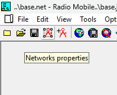
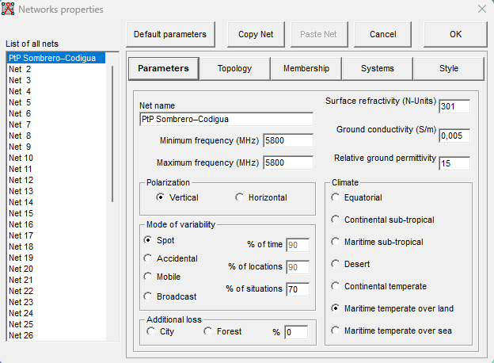

Capítulo 02 · Módulo 03
Parámetros: los datos del caso.
Definir la frecuencia y las condiciones de propagación del enlace Sombrero–Codigua.
Qué configuramos en esta pestaña
Parameters reúne el nombre de la red, la frecuencia y las condiciones generales del modelo de propagación. Aquí documentaremos los valores del escenario PtP Sombrero–Codigua que se ve en la captura. La potencia del radio, la ganancia de antena y las alturas de instalación se revisarán en las pestañas correspondientes.
Abrir las propiedades de la red
Abre Networks properties con el icono señalado por su texto de ayuda, selecciona la red del caso en la lista izquierda y entra en Parameters.


1. Nombre y frecuencia de la red
| Campo | Valor del caso | Cómo interpretarlo |
|---|---|---|
| Net name | PtP Sombrero–Codigua | Identifica esta red dentro del proyecto; no modifica la propagación. |
| Minimum frequency (MHz) | 5800 | Frecuencia de cálculo elegida para esta simulación: 5800 MHz equivalen a 5,8 GHz. |
| Maximum frequency (MHz) | 5800 | Utilizamos el mismo valor para estudiar esa frecuencia concreta, en lugar de un rango amplio. |
El airFiber 5XHD pertenece a la banda de 5 GHz; en este escenario hemos concretado el cálculo en 5,8 GHz. Los dos campos anteriores no configuran el ancho de canal: poner 5800 en ambos no significa que el radio tenga un canal de ancho cero. El ancho y el modo de trabajo se registran por separado y deben corresponder con la sensibilidad utilizada.
2. Atmósfera y propiedades del suelo
| Campo | Valor del caso | Cómo interpretarlo |
|---|---|---|
| Surface refractivity (N-Units) | 301 | Refractividad superficial de referencia: representa una propiedad de la atmósfera que afecta a la curvatura de las ondas. |
| Ground conductivity (S/m) | 0,005 | Conductividad eléctrica del terreno. Tomamos este valor de partida para suelo medio. |
| Relative ground permittivity | 15 | Permitividad relativa del terreno, sin unidades. Se utiliza junto con la conductividad para caracterizar su comportamiento eléctrico. |
Estos tres valores son referencias del modelo para el escenario inicial, no mediciones realizadas en Cerro Sombrero o Codigua. Mantenerlos documentados permite repetir el análisis y comparar cambios con un criterio claro.
3. Polarización
| Campo | Valor del caso | Cómo interpretarlo |
|---|---|---|
| Polarization | Vertical | Selección de esta captura para el cálculo inicial. Debe contrastarse con la polarización de la antena externa que se elija. |
El AF-5XHD no determina por sí solo la polarización de la antena. Si elegimos una antena de doble polarización inclinada ±45°, las opciones Vertical y Horizontal de esta pestaña no representan directamente ese conjunto. Por eso registramos Vertical como una aproximación de esta etapa, sin darla por validada para la antena definitiva.
4. Modo de variabilidad y porcentajes
| Campo | Valor del caso | Cómo interpretarlo |
|---|---|---|
| Mode of variability | Spot | Modo utilizado para este enlace entre dos sitios fijos. |
| % of time | 90 · deshabilitado | Así aparece en la captura con Spot seleccionado; no lo tratamos como un objetivo de disponibilidad configurado. |
| % of locations | 90 · deshabilitado | También aparece inactivo en este modo. El caso estudia dos ubicaciones concretas. |
| % of situations | 70 | Porcentaje estadístico seleccionado para esta primera simulación; no es el porcentaje de tiempo de funcionamiento del enlace. |
5. Pérdidas adicionales y clima
| Campo | Valor del caso | Cómo interpretarlo |
|---|---|---|
| Additional loss | 0 % · sin City ni Forest | En esta pasada no añadimos una corrección genérica adicional de ciudad o bosque. |
| Climate | Maritime temperate over land | Clima marítimo templado sobre tierra, seleccionado como hipótesis inicial de propagación para este escenario. |
El 0 % no afirma que no existan árboles o edificios: su ubicación y efecto sobre la línea de vista y Fresnel deben revisarse. Tampoco equivale a que todas las pérdidas del enlace sean cero. La opción climática se conserva como supuesto del escenario; no es una clasificación local comprobada ni indica que el trayecto pase sobre el mar.
Qué sale del datasheet y qué sale del entorno
Las fichas del radio y de la antena sirven para comprobar frecuencias admitidas, polarización, potencia, ganancia y sensibilidad. La refractividad, el suelo, el clima y los criterios estadísticos pertenecen al entorno y al modelo. Revisa cómo interpretar las fichas técnicas y anota la fuente de cada valor en la ficha del enlace.
Comprobar y continuar
- Comprueba que esté seleccionada la red PtP Sombrero–Codigua.
- Revisa especialmente la unidad MHz y que ambos campos indiquen 5800.
- Contrasta las selecciones con la captura y confirma los cambios con OK.
- Conserva el proyecto y la captura como referencia de este escenario.
Seguiremos Topología → Systems → Membership → Estilo, con un módulo dedicado a cada pestaña conforme documentemos sus configuraciones. La referencia de equipos y resultados queda disponible mientras completamos esos pasos.
Consulta técnica: parámetros del modelo ITM · manual de Radio Mobile.